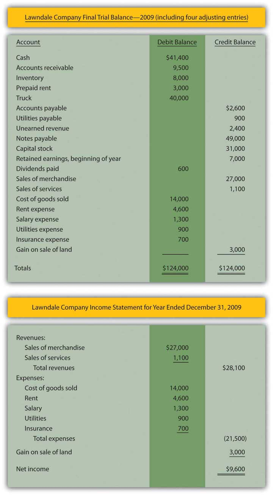
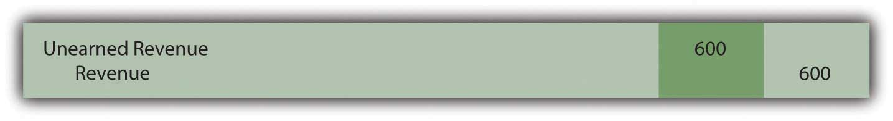
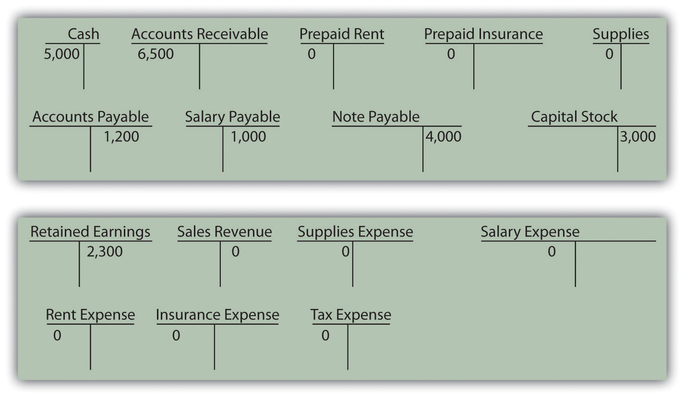

Joe introduces Chapter 5 "Why Must Financial Information Be Adjusted Prior to the Production of Financial Statements?" and speaks about the course in general.
At the end of this section, students should be able to meet the following objectives:
Question: The first two steps of the accounting process were identified in Chapter 4 "How Does an Organization Accumulate and Organize the Information Necessary to Prepare Financial Statements? " as “analyze” and “record.” A transaction occurs and the financial effects are ascertained through careful analysis. Once determined, the impact an event has on specific accounts is recorded in the form of a journal entry. Each of the debits and credits is then posted to the corresponding T-account located in the ledger. As needed, current balances can be determined for any or all of these accounts by netting the debits and credits. It is a system as old as the painting of the Mona Lisa.
The third step in this process was listed as “adjust.” Why do ledger account balances require adjustment? Why are the T-account totals found in Figure 4.3 "Balances Taken From T-accounts in Ledger" not simply used by the accountant to produce financial statements for the reporting organization?
Answer: Financial events take place throughout the year. As indicated, journal entries are recorded with the individual debits and credits then entered into the proper T-accounts. However, not all changes in a company’s accounts occur as a result of physical events. Balances frequently increase or decrease simply because of the passage of time. Or the impact is so gradual that producing individual journal entries is not reasonable. For example, salary is earned by employees every day (actually every minute) but payment is not usually made until the end of the week or month. Other expenses, such as utilities, rent, and interest, are incurred over time. Supplies such as pens and envelopes are used up on an ongoing basis. Unless an accounting system is programmed to record tiny incremental changes, the financial effects are not captured as they occur.
Following each day of work, few companies take the trouble to record the equivalent amount of salary or other expense and the related liability. When a pad of paper is consumed within an organization, debiting supplies expense for a dollar or two and crediting supplies for the same amount hardly seems worth the effort.
Prior to producing financial statements, the accountant must search for all such changes that have been omitted. These additional increases or decreases are also recorded in a debit and credit format (often called adjusting entriesChanges in account balances recorded prior to making financial statements to update T-accounts because some amounts have increased or decreased gradually over time but not recorded through a normal journal entry. rather than journal entries) with the impact then posted to the appropriate ledger accounts. The process continues until all balances are properly stated. These adjustments are a prerequisite step in the preparation of financial statements. They are physically identical to journal entries recorded for transactions but they occur at a different time and for a different reason.
Link to multiple-choice question for practice purposes: http://www.quia.com/quiz/2092644.html
Question: Adjusting entries are used to update the ledger for any financial changes that have occurred gradually over time and not recorded through a regular journal entry. What kinds of adjustments are normally needed before financial statements are prepared?
Answer: A variety of adjusting entries will be examined throughout the remainder of this textbook. One of the accountant’s primary responsibilities is the careful study of all financial information to ensure that it is all fairly presented before being released. Such investigation can lead to the preparation of numerous adjusting entries. Here, in Chapter 5 "Why Must Financial Information Be Adjusted Prior to the Production of Financial Statements?", only the following four general types of adjustments are introduced. In later chapters, many additional examples will be described and analyzed.
Usually, at the start of the adjustment process, the accountant prepares an updated trial balance to provide a visual, organized representation of all ledger account balances. This listing aids the accountant in spotting figures that might need adjusting in order to be fairly presented. Therefore, Figure 5.1 "Updated Trial Balance" takes the ending account balances for the Lawndale Company found in the ledger presented in Figure 4.3 "Balances Taken From T-accounts in Ledger" and puts them into the form of a trial balance.
Figure 5.1 Updated Trial Balance

Question: The first adjustment listed is an accrued expenseExpenses (and the related liabilities) that grow gradually over time; impact is recorded prior to preparing financial statements by means of an adjusting entry to update both accounts.. In Chapter 4 "How Does an Organization Accumulate and Organize the Information Necessary to Prepare Financial Statements? ", the word “accrue” was defined as “to grow.” Thus, an accrued expense is one that increases gradually over time. As indicated previously, some companies program their accounting systems to record such expenses as they are incurred. This accrual process reduces the need for separate adjusting entries. Other companies make few, if any, accruals and update all balances through numerous adjustments. The recording process for such expenses should be designed to meet the informational needs of company officials. Some prefer to have updated balances readily available in the ledger while others are inclined to wait for periodic financial reports to be issued. What are some typical accrued expenses and what is the appropriate adjusting entry if they have not been previously recorded by the accounting system?
Answer: If a reporting company’s accounting system recognizes an expense as it grows, no adjustment is necessary. The balances are recorded properly. They are ready to be included in financial statements. Thus, when statements are prepared, the accountant only needs to search for accrued expenses that have not yet been recognized.
Numerous expenses do get slightly larger each day until paid, including salary, rent, insurance, utilities, interest, advertising, income taxes, and the like. For example, on its December 31, 2008, balance sheet, the Hershey Company reported accrued liabilities of approximately $504 million. In the notes to the financial statements, this amount was explained as debts owed on that day for payroll, compensation and benefits, advertising and promotion, and other accrued expenses.
Assume, for illustration purposes, that the accountant reviews the trial balance presented in Figure 5.1 "Updated Trial Balance" and realizes that utility expenses (such as electricity and water) have not been recorded since the most recent payment. Assume that the Lawndale Company currently owes $900 for those utilities. The following adjustment is needed before financial statements are created. It is an adjusting entry because no physical event took place; this liability simply grew over time and has not yet been paid.
Figure 5.2 Adjusting Entry 1: Amount Owed for Utilities
Link to multiple-choice question for practice purposes: http://www.quia.com/quiz/2092630.html
Adjusting entries are necessary to update all account balances before financial statements can be prepared. These adjustments are not the result of physical events or transactions but are rather caused by the passage of time or small changes in account balances. The accountant examines a current listing of accounts—known as a trial balance—to identify amounts that need to be changed prior to the preparation of financial statements. Although numerous adjustments are studied in this textbook, four general types are especially common: accrued expenses, prepaid expenses, accrued revenues, and unearned revenues. Any expense (such as salary) that grows gradually over time but has not yet been paid is known as an accrued expense. If not automatically recorded by the accounting system, it must be entered into the records by adjustment prior to producing financial statements.
At the end of this section, students should be able to meet the following objectives:
Question: The second adjustment to be considered here involves the handling of prepaid expensesAssets that are created when an expense is paid in advance; normally recorded as an asset initially and then gradually reassigned to expense over time through adjusting entries.. In the transactions that were recorded in the previous chapter, Journal Entry 10 reported a $4,000 payment made in advance for four months of rent to use a building. An asset—prepaid rent—was recorded through the normal accounting process. This account is listed on the trial balance in Figure 5.1 "Updated Trial Balance". Why might a year-end adjusting entry be needed in connection with a prepaid expense?
Answer: During these four months, the Lawndale Company will use the rented facility to help generate revenue. Over that time, the future economic benefit established by the payment gradually becomes a past benefit. The asset literally changes into an expense day by day. For illustrative purposes, assume that one month has now passed since the original payment. This month of benefit provided by the rent ($1,000 or $4,000/four months) no longer exists; it has been consumed.
As a preliminary step in preparing financial statements, an adjusting entry is needed to reclassify $1,000 from the asset into an expense account. This adjustment leaves $3,000 in the asset (for the remaining three months of rent on the building) while $1,000 is now reported as an expense (for the previous one month of rent).
Figure 5.3 Adjusting Entry 2: Previously Rented Facility Is Used

The basic purpose of adjusting entries is to take whatever amounts reside in the ledger and align them with the requirements of U.S. generally accepted accounting principles (U.S. GAAP). For this illustration, the original $4,000 payment was classified as a prepaid rent and the adjustment above was created in response to that initial entry.
In recording transactions, some accounting systems mechanically handle events in a different manner than others. Thus, construction of an adjusting entry always depends on the recording that previously took place. To illustrate, assume that when this $4,000 payment was made, the company’s computer program had been designed to enter a debit to rent expense rather than to prepaid rent. All money spent for rent was automatically recorded as rent expense. This initial accounting has no impact on the final figures to be reported but does alter the adjustment process.
An adjusting entry still needs to be prepared so that the expense appearing on the income statement is $1,000 (for the past one month) while the asset on the balance sheet is shown as $3,000 (for the next three months). If the entire cost of $4,000 is in rent expense, the following alternative is necessary to arrive at the proper balances. It shifts $3,000 out of the expense and into the asset.
Figure 5.4 Adjusting Entry 3: Alternative Based on a Different Initial Recording

This entry leaves $1,000 in expense and $3,000 as the asset. Regardless of the account, the accountant first determines the balance that is present in the ledger and then creates the specific adjustment needed to arrive at fairly presented figures.
Link to multiple-choice question for practice purposes: http://www.quia.com/quiz/2092645.html
Question: Accrued revenue is the third general type of adjustment to be covered here. Based on the title, this revenue is one that grows gradually over time. If not recorded by a company’s accounting system, updating is necessary before financial statements are prepared. What adjustment is used to recognize accrued revenue that has not previously been recorded?
Answer: Various types of revenue are earned as time passes rather than through a physical event such as the sale of inventory. To illustrate, assume that a customer comes to the Lawndale Company five days before the end of the year and asks for assistance. The customer must be away for the next thirty days and wants company employees to feed, water, and care for his horses during the period of absence. Everything needed for the job is available at the customer’s farm; Lawndale just has to provide the service. The parties agree that the company will receive $100 per day for this work with payment to be made upon the person’s return.
No asset changes hands at the start of this task. Thus, the company’s accounting system is not likely to make any entry until payment is eventually received. However, assume that after the first five days of work, the company is ready to prepare financial statements and needs to recognize all revenue earned to date. The service to this customer has been carried out for five days at a rate of $100 per day. The company has performed the work to earn $500, an amount that will not be received until later. This receivable and revenue should be recognized through an adjusting entry so that the reported financial figures are fairly presented. The earning process for the $500 occurred this year and should be recorded in this year.
Figure 5.5 Adjusting Entry 4: Revenue Is Earned for Work Done

No recognition is needed for cost of goods sold. Inventory is not being sold but rather is a service. The $500 receivable will be removed in the subsequent period when the customer eventually pays the company for the services rendered.
Question: As discussed in an earlier chapter, the revenue realization principle (within accrual accounting) provides formal guidance for the timing of revenue reporting. It states in part that the earning process must be substantially complete before revenue can be recognized. That seems reasonable. In the above example, the work has only been performed for five days out of a total of thirty. That is not substantially complete. Why is any accrued revenue recognized if the earning process is not substantially complete?
Answer: This question draws attention to a difficult problem that accountants face frequently in creating a fair portrait of a company. The proper recognition of revenue is one of the most challenging tasks encountered in financial accounting. Here, the simplest way to resolve this issue is to consider the nature of the task to be performed.
Is this job a single task to be carried out by the company over thirty days or is it thirty distinct tasks to be handled once a day over this period of time?
If the work of feeding and caring for the horses is one large task like painting a house, then the earning process is only 5/30 finished at the moment and not substantially complete. No revenue is recognized until the work has been performed for twenty-five more days. The previous adjusting entry is not warranted.
Conversely, if this assignment is thirty separate tasks, then five of them are substantially complete and revenue of $500 is properly recorded by the above entry. Unfortunately, the distinction is not always clear. Because accounting is conservative, revenue should never be recognized unless evidence predominates that the individual tasks are clearly separate events.
Link to multiple-choice question for practice purposes: http://www.quia.com/quiz/2092646.html
Question: In practice, how does an accountant determine whether a specific job is substantially complete? Because of the direct impact on net income, this judgment must be critical in financial reporting.
Answer: Accountants spend a lot of time searching for credible evidence as to the true nature of the events they encounter. That can be a challenge. Their goal is to ensure that all information included in financial statements is presented fairly according to U.S. GAAP.
Is a job substantially complete so that revenue can be recognized or not?
That question can often be difficult to answer. Here is one technique that might be applied in analyzing this particular example. Assume that after five days, Lawndale had to quit feeding the customer’s horses for some legitimate reason. Should the company be able to demand and collect all $500 for the work done to that point? If so, then those five days are distinct tasks that have been completed. However, if no money would be due based on working just five days, substantial completion has not been achieved by the services performed. Thus, revenue recognition would be inappropriate.
In Adjusting Entry 3, the assumption is made that the daily tasks are separate and that the company could collect for the work accomplished to date. However, this type of judgment can be extremely difficult in the real world. It is often the product of much thought and discussion. The impact on the financial statements can be material, which increases pressure on the accountant.
Students often enter into a financial accounting course believing that little is required other than learning set rules and then following them mechanically. As will be demonstrated many times in this textbook, nothing ever replaces the need for experienced judgment on the part of the accountant.
To align reported balances with the rules of accrual accounting, adjusting entries are created as a step in the preparation of financial statements. Prepaid expenses are normally recorded first as assets and then reclassified to expense as time passes to satisfy the matching principle. The mechanics of this process will vary somewhat based on the initial recording of the payment. Accrued revenues and the corresponding receivables are recognized when the earning process is deemed to be substantially complete. The time at which this benchmark is achieved often depends on whether a single job or a collection of independent tasks is under way. As with so many areas of financial reporting, that decision can rely heavily on professional judgment.
At the end of this section, students should be able to meet the following objectives:
The last adjusting entry to be covered at this time is unearned (or deferred) revenue. Some companies operate in industries where money is received first and then earned gradually over time. Newspaper and magazine businesses, for example, are paid in advance by their subscribers and advertisers. The earning process becomes substantially complete by the subsequent issuance of their products. Thus, the December 28, 2008, balance sheet for the New York Times Company reported a liability titled “unexpired subscriptions” of $81 million. This balance represents payments collected from customers who have not yet received their newspapers.
Question: In Journal Entry 13 in Chapter 4 "How Does an Organization Accumulate and Organize the Information Necessary to Prepare Financial Statements? ", the Lawndale Company reported receiving $3,000 for services to be rendered at a later date. An unearned revenue account was recorded as a liability for that amount and appears in the trial balance in Figure 5.1 "Updated Trial Balance". When is an adjusting entry needed in connection with the recognition of previously unearned revenue?
Answer: As indicated, unearned revenue represents a liability recognized when money is received before work is done. After any portion of the required service is carried out so that the earning process is substantially complete, an appropriate amount is reclassified from unearned revenue on the balance sheet to revenue on the income statement. For example, in connection with the $3,000 payment collected by Lawndale, assume that all the work necessary to recognize the first $600 has now been performed. To fairly present this information, an adjusting entry is prepared to reduce the liability and recognize the earned revenue.
Figure 5.6 Adjusting Entry 5: Money Previously Received Has Now Been Earned

Link to multiple-choice question for practice purposes: http://www.quia.com/quiz/2092631.html
Question: After all adjusting entries have been recorded in the journal and posted to the appropriate T-accounts in the ledger, what happens next in the accounting process?
Answer: At this point, the accountant believes that all account balances are fairly presented because no material misstatements exist according to U.S. GAAP. As one final check, an adjusted trial balance is produced for a last, careful review. Assuming that no additional concerns are noticed, the accountant prepares an income statement, a statement of retained earnings, and a balance sheet.
The basic financial statements are then completed by the production of a statement of cash flows. In contrast to the previous three, this remaining statement does not report ending ledger account balances but rather discloses the various changes occurring during the period in the composition of the cash account. As indicated in Chapter 3 "In What Form Is Financial Information Actually Delivered to Decision Makers Such as Investors and Creditors?", all cash flows are classified as resulting from operating activities, investing activities, or financing activities.
The reporting process is then completed by the preparation of the explanatory notes that always accompany a set of financial statements.
The final trial balance for the Lawndale Company (including the four adjusting entries produced above) is presented in the appendix to this chapter. After that, each of the individual figures is appropriately placed within the first three financial statements. Revenues and expenses appear in the income statement, assets and liabilities in the balance sheet, and so on. The resulting statements are also exhibited in the appendix for illustrative purposes. No attempt has been made here to record all possible adjusting entries. For example, no income taxes have been recognized and interest expense has not been accrued in connection with notes payable. Depreciation expense of noncurrent assets with finite lives (the truck, in the company’s trial balance) will be discussed in detail in a later chapter. However, these illustrations are sufficient to demonstrate the end result of the accounting process as well as the basic structure used for the income statement, statement of retained earnings, and balance sheet.
The statement of cash flows for the Lawndale Company cannot be created based solely on the limited information available in this chapter concerning the cash account. Thus, it has been omitted. Complete coverage of the preparation of a statement of cash flows will be presented in Chapter 17 "In a Set of Financial Statements, What Information Is Conveyed by the Statement of Cash Flows?" of this textbook.
Question: Analyze, record, adjust, and report—the four basic steps in the accounting process. Is the work year complete for the accountant after financial statements are prepared?
Answer: One last mechanical process needs to be mentioned. Whether a company is as big as Microsoft or as small as the local convenience store, the final action performed each year by the accountant is the preparation of closing entriesEntries made to reduce all temporary ledger accounts (revenues, expenses, gains, losses, and dividends paid) to zero at the end of an accounting period so that a new measurement for the subsequent period can begin; the net effect of this process is transferred into the retained earnings account to update the beginning balance to the year-end figure.. Several types of accounts—specifically, revenues, expenses, gains, losses, and dividends paid—reflect the various changes that occur in a company’s net assets but just for the current period. In order for the accounting system to start measuring the effects for each new year, all of these specific T-accounts must be returned to a zero balance after the annual financial statements are produced.
After these “temporary” accounts are closed at year’s end, the resulting single figure is the equivalent of the net income reported for the year less dividends paid. This net effect is recorded in the retained earnings T-account. The closing process effectively moves the balance for each revenue, expense, gain, loss, and dividend paid into retained earnings. In the same manner as journal entries and adjusting entries, closing entries are recorded initially in the company’s journal and then posted to the ledger. As a result, the beginning retained earnings balance for the year is updated to arrive at the ending total reported on the balance sheet.
Assets, liabilities, capital stock, and retained earnings all start out each year with a balance that is the same as the ending figure reported on the previous balance sheet. Those accounts are not designed to report an impact occurring just during the current year. In contrast, revenues, expenses, gains, losses, and dividends paid all begin the first day of each year with a zero balance—ready to record the events of this new period.
Companies occasionally receive money for services or goods before they are provided. In such cases, an unearned revenue is recorded as a liability to indicate the company’s obligation to its customer. Over time, as the earning process becomes substantially complete, the unearned revenue is reclassified as a revenue through adjusting entries. After this adjustment and all others are prepared and recorded, an adjusted trial balance is created and those figures are then used to produce financial statements. Finally, closing entries are prepared for all revenues, expenses, gains, losses, and dividends paid. Through this process, all of these T-accounts are returned to zero balances so that recording for the new year can begin. The various amounts in these temporary accounts are moved to retained earnings. Thus, its beginning balance for the year is increased to equal the ending total reported on the company’s balance sheet.
Following is a continuation of our interview with Kevin G. Burns.
Question: Large companies have millions of transactions to analyze, classify, and record so that they can produce financial statements. That has to be a relatively expensive process that produces no income for the company. From your experience in analyzing companies and their financial statements, do you think companies should spend more money on their accounting systems or would they be wise to spend less and save their resources?
Kevin Burns: Given the situations of the last decade ranging from the accounting scandals of Enron and WorldCom to recent troubles in the major investment banks, the credibility of financial statements and financial officers has eroded significantly. My view is that—particularly today—transparency is absolutely paramount and the more detail the better. Along those lines, I think any amounts spent by corporate officials to increase transparency in their financial reporting, and therefore improve investor confidence, is money well spent.
Joe talks about the five most important points in Chapter 5 "Why Must Financial Information Be Adjusted Prior to the Production of Financial Statements?".
Figure 5.7 Appendix A
Figure 5.8 Appendix BIn a subsequent chapter, the reporting of noncurrent assets with finite lives will be covered in detail. The cost of such assets is subject to depreciation over their estimated useful lives so that a net book value is reported that falls each period. Therefore, the $40,000 is used here simply to illustrate the placement of the balances.

Which of the following accounts would be closed at the end of the financial statement cycle?
Jenkins Company received $600 from a client in May for work Jenkins would perform during May and June. What entry should Jenkins make on May 31 if one-third of the work is complete on that date?
Figure 5.9

Figure 5.10

Figure 5.11
Figure 5.12
Which of the following accounts would increase retained earnings when closed into it?
Which of the following is not one of the four types of adjustments?
In September 20X3, LaToya Corporation paid for insurance for the next six months in the amount of $42,000. On December 31, LaToya’s accountant forgot to make the adjusting entry that was needed. Which of the following is true?
Determine if the following adjusting entries are
Determine if the following transactions for Marlin Corporation require an adjustment or not. If an adjusting entry is required, give the correct entry.
Keating Inc. rents its headquarters from Starling Enterprises for $10,000 per month. On September 1, 20XX, Keating pays Starling $60,000 for six months worth of rent.
Leon Jackson is ecstatic! First National Bank just approved a loan for Leon to start a Web site design and maintenance business called Webworks. He is now ready to purchase his needed equipment, hire his administrative help, and begin designing sites. During June, his first month of business, the following occur:
a. Webworks signs a note at the bank and is given $10,000 cash.
b. Leon deposits $2,000 of his own money into Webworks’s checking account.
c. Webworks purchases a new computer and additional equipment for $3,000.
d. Webworks purchases supplies worth $200 on account that should last Webworks two months.
e. Webworks hires Nancy Po to assist with administrative tasks. She will charge $100 per Web site for her assistance.
f. Webworks begins working on his first two Web sites, one for Juan Sanchez, a friend of his dad’s and the other for Pauline Smith, a local businesswoman.
g. Webworks completes the site for Mr. Sanchez and sends him a bill for $600.
h. Webworks completes the site for Ms. Smith and sends her a bill for $450.
i. Webworks collects $600 in cash from Mr. Sanchez.
j. Webworks pays Nancy $100 for her work on Mr. Sanchez’s Web site.
k. Webworks receives $500 in advance to work on a Web site for a local restaurant. Work on the site will not begin until July.
l. Webworks pays taxes of $200 in cash.
Required:
A. Prepare journal entries for the above events if needed.
B. Post the journal entries to T-accounts.
C. Prepare an unadjusted trial balance for Webworks for June.
D. Prepare adjusting entries for the following and post them to your T-accounts, adding any additional T-accounts as necessary.
m. Webworks owes Nancy $100 for her work on Ms. Smith’s Web site.
n. Leon’s parents let him know that Webworks owes $80 toward the electricity bill. Webworks will pay them in July.
o. Webworks only used half of the supplies purchased in (d) above.
E. Prepare an adjusted trial balance for Webworks for June.
Jan Haley owns and operates Haley’s Dry Cleaners. The following occurred during December:
a. On December 1, Haley prepaid rent on her store for December and January with $2,000 cash.
b. On December 1, Haley purchased insurance with cash in the amount of $2,400 that will last six months.
c. Haley paid $900 of her accounts payable balance.
d. Haley paid off all of her salaries payable balance.
e. Haley purchased supplies on account in the amount of $2,400.
f. Haley paid a salary to her assistant of $1,000 in cash for work done in the first two weeks of December.
g. Haley dry-cleaned clothes for customers on account in the amount of $8,000.
h. Haley collected $6,300 of her accounts receivable balance.
i. Haley paid tax of $750 in cash.
Required:
A. Prepare the journal entry for each transaction.
B. Prepare all necessary T-accounts. Numbers already under the accounts represent the prior balance in that account.
Figure 5.13 Opening T-Account Balances

C. Prepare a trial balance dated 12/31/XX.
D. Make the following adjusting entries for the month of December and post them to the T-accounts:
j. Rent expense.
k. Insurance expense.
l. Haley owes her assistant $1,000 for work done during the last two weeks of December.
m. An inventory of supplies shows $400 in supplies remaining on December 31.
E. Prepare an adjusted trial balance dated 12/31/XX.
F. Prepare an income statement, statement of retained earnings, and balance sheet for the month ending December 31, 20XX.
On January 1, Kevin Reynolds, a student at State U, decides to start a business. Kevin has noticed that various student organizations around campus are having more and more need for mass produced copies of programs on CDs. While a lot of students have a CD drive on their computers that can write to CDs, it is a slow process when a high volume of CDs is needed.
Kevin believes that with a beginning investment in specialty equipment, he can provide a valuable product to the college community. So on 1/1, Kevin officially begins “Kevin’s Kool CD Kopies.” Of course, Kevin is very careful to ensure that his customers have full ownership rights to the material on their CDs.
Part 1:
The following occur during January.
1. Kevin deposits $500 of his own money into the company’s checking account.
2. Kevin signs a note payable in the amount of $1,000 from Neighborhood Bank. The note is due in one year.
3. KKCDK (Kevin’s Kool CD Kopies) purchases a CD duplicator (a piece of equipment), which can copy seven CDs at one time. The cost is $1,300 and he pays cash.
4. KKCDK purchases 500 blank CDs for $150 on account.
5. KKCDK pays $20 cash for flyers to advertise.
6. KKCDK quickly catches on with the student groups on campus. KKCDK sells 400 CDs to various groups for $0.80 per CD. KKCDK receives cash payment for 300 of the CDs and the student groups owe for the other 100 CDs.
7. KKCDK pays $100 on its accounts payable.
8. KKCDK receives $40 in advance to copy 50 CDs for a student group. He will not begin work on the project until February.
9. KKCDK incurs $40 in tax expense. The taxes will be paid in February.
Required:
A. Prepare journal entries for the above events if needed.
B. Post the journal entries to T-accounts.
C. Prepare an unadjusted trial balance for KKCDK for January.
D. Prepare adjusting entries for the following and post them to your T-accounts.
10. Kevin’s roommate, Mark, helps with the CD copying and delivering. KKCDK pays Mark a salary of $50 per month. Mark will get his first check on February 1.
11. KKCDK incurs $10 in interest expense. The interest will be paid with the note.
E. Prepare an adjusted trial balance for KKCDK for January.
F. Prepare financial statements for KKCDK for January.
Part II: The following occur in February:
12. Kevin decides to expand outside the college. On the first day of the month, KKCDK pays $20 in advance for advertising in the local paper. The advertisements will run during February and March.
13. The student groups paid for the 100 CDs not paid for in January.
14. KKCDK paid off its remaining accounts payable, salaries payable, taxes payable and interest payable.
15. KKCDK purchases 450 CDs for $135 on account.
16. KKCDK sells 500 CDs during the month for $0.80 each. KKCDK receives cash for 450 of them and is owed for the other 50.
17. KKCDK completes and delivers the advanced order of 50 CDs described in number 8 above.
18. KKCDK incurs $80 in tax expense. The taxes will be paid in March.
Required:
G. Prepare journal entries for the above events if needed.
H. Post the journal entries to the T-accounts.
I. Prepare an unadjusted trial balance for KKCDK for February.
J. Prepare adjusting entries for the following and post them to your T-accounts.
19. Mark continues to earn his salary of $50 and will be paid on March 1.
20. An adjustment is made for advertising in number 12 above.
21. KKCDK incurs $10 in interest expense. The interest will be paid with the note.
K. Prepare an adjusted trial balance for KKCDK for February.
L. Prepare the financial statements for February.